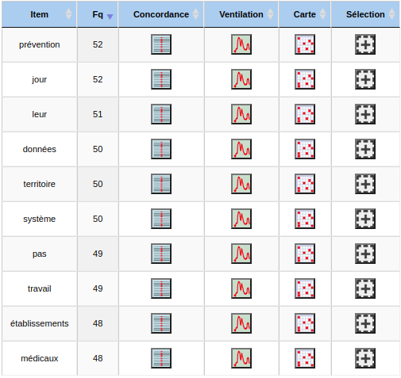

Si nous prenons les mots les plus fréquents du dictionnaire, sans tenir compte des mots grammaticaux (articles, conjonctions et prépositions), nous obtenons les mots suivants :
Item
Fq
santé
1057
2023
601
Santé
452
France
384
soins
222
Publié
217
être
213
peut
187
Maladies
185
jour
172
patients
154
vie
153
savoir
149
données
143
recherche
138
Nous trouvons des notions autour de la santé en France en 2023, la notion de "soins" et de "maladies", de "patients", et aussi nous pouvons remarquer un potentiel intérêt pour la recherche ("recherche", "données", "savoir").
Sur la base des mots relevés ci-dessus, nous allons voir à quel point ils sont présents dans l’ensemble des urls. Pour celà, nous utiliserons l’outil carte de section
.
2. Fouille : Section > Carte des sections
Dans la fouille de texte, nous pouvons venir voir où apparaissent certains termes en fonction des sites. Notre délimiteur se trouvant entre chaque dump-text de chaque page web, nous pourrons donc observer si le terme recherché se trouve sur l’ensemble des urls ou seulement quelques unes.
Carte des sections de la recherche "recherche"
Nous avons voulu, ici, observer à quel point le mot "recherche" est présent dans nos dumps-texts de site. Nous pouvons voir que ce dernier est assez présent dans la moitié des sites. Cependant, nous devons nous méfier de ce résultat car les dumps-text de nos sites contiennent l’ensemble de ce qui est écrit sur le site, y compris la barre de recherche. Afin de s’assurer qu’il ne s’agit pas de la barre de recherche mais de la recherche médicale, nous allons utiliser d’autres fonctions du Trameur, et comparer ces résultats à ceux que nous obtiendrons avec le texte des contextes.
Carte des sections de la recherche "soins"
Le mot "soins" apparaît dans 50% des sites. Nous pouvons donc penser que la notion de soins et de se soigner est plutôt importante pour les français.
Carte des sections de la recherche "patients"
Carte des sections de la recherche "hôpital"
Il est intéressant de comparer l’apparition du mot "patients" et "hôpital" au sein des sites. Nous observons que lorsque le mot "hôpital" apparaît, le mot "patients" est généralement présent au sein du même site. L’inverse n’est pas le cas.
Nous pouvons aussi observer une corrélation entre la présence du terme "soins" et du terme "patients". Ainsi, nous pouvons penser que ces mots apparaissent ensemble car lorsque l’on fait référence à un patient, cela implique qu’il reçoit des soins médicaux.
3. Cooccurrence : Coocs > Cooccurrents
Tableau des cooccurrents du terme "santé" (IndSPmin = 10)
Diagramme des cooccurrents de "santé"
Nous trouvons des cooccurrents avec un indice de spécificité, une fréquence de cooccurrence ou de co-fréquence assez élevée. En effet, nous avons par exemple le cooccurrent "professionnels" qui renvoie aux "professionnels de santé" si nous observons les contextes. D’autres termes que nous pouvons relever qui seraient intéressants sont "mentale", "territoire", "publique", "établissements", "inégalités", "Pollution" et "mutuelle".
Nous pouvons par exemple vouloir creuser davantage la santé mentale en observant les contextes du mot "mentale" cooccurrent de "santé".
Tableau des contextes du mot "mentale" cooccurrent de "santé" ("santé mentale")
La santé mentale semble être une notion importante aux yeux des français car elle apparaît à un total de 74 fois dans l’ensemble de nos sites.
Tableau des contextes des cooccurrents "santé" et "inégalités"
Le contexte de cette cooccurrence met en évidence des inégalités en France au niveau social dans le secteur de la santé. En effet, les termes "inégalités sociales de santé" sont très récurrents.
Le terme "Pollution" aurait pu être intéressant dans le cadre d’une apparition proche du terme "santé". Nous pouvons en effet penser que la pollution est quelque chose qui inquiète les français vis à vis de leur santé. Malgré celà, grâce au tableau des contextes, nous pouvons voir que ce terme n’est pas vraiment sujet à discussion, il semble plutôt faire parti d’un titre de menu, comme visible sur un extrait du tableau ci-dessous :
Tableau des contextes des cooccurrents "santé" et "Pollution"
Partie 2. Fichier Contextes
1. Dénombrement : Trame > Dictionnaire
Voici une partie du dictionnaire des mots présents dans les contextes qui nous semble intéressante :

Extrait du dictionnaire de contextes.txt
Voici un tableau du dictionnaire des termes qui nous semblent intéressants à relever :
Item
Fq
santé
1057
Santé
452
France
184
2023
164
soins
115
publique
82
professionnels
75
indicateurs
75
mentale
72
19
71
être
68
Maladies
64
Publié
62
patients
57
réponse
55
recherche
54
Nous remarquons dans les mots les plus fréquents dans les contextes du mot "santé", des termes différents de ceux les plus fréquents dans les dumps-texts. En effet, nous pouvons trouver "indicateurs", "19", "réponse", "territoire" et "système". Le mot "recherche" est moins présent dans les contextes de "santé". Nous n’avons pas en revanche "savoir".
Le terme "territoire" est intrigant, il aurait pu montrer des inégalités au sein des territoires. Cependant, en regardant le concordancier, cela ne donne rien d'intéressant, semble être un nom de catégorie de menu "santé sur le territoire français".
Concordancier de "19" dans le cadre des contextes
Nous nous sommes demandé pourquoi un nombre soit à ce point fréquent au sein de nos contextes, au nombre de 71. Pour comprendre ceux à quoi il fait référence, nous avons observé le concordancier de "19" afin d’observer les phrases dans lesquelles il apparaît. Nous pouvons voir ci-dessus qu’il s’agit du nombre "19" de "COVID-9". Ceci indique donc que dans le domaine de la santé sur internet, encore beaucoup de médias parlent de cette maladie.
Concordancier de "être" dans le cadre des contextes
Nous nous sommes aussi intéressées au concordancier de "être" car il peut faire référence à des adjectifs qui décrivent la santé. Comme nous sommes ici sur les contextes du mot santé, le mot "être" peut par exemple décrire comment se sentent les personnes. Nos résultats donnent donc des expressions comme "bien-être physique, mental et social", nous trouvons aussi "l’acné peut être légère ou sévère". Il y a aussi des notions comme le consentement, l’AVC, santé globale, médicaments, médecins, "bien-être au travail", douleures, vertiges, infrastructures de biologie, médecine douce, "être attentif à sa santé".
3. Cooccurrence : Coocs > Cooccurrents
Nous allons maintenant nous intéresser aux cooccurrents de certains termes comme "19", "mentale", "France" et "soins".
Cooccurrents de "19" dans les contextes de "santé"
Nous retrouvons dans les cooccurrents de "19", des éléments faisant partie du vocabulaire autour de la pandémie du COVID-19 tels que "COVID", "Coronavirus", "épidémie", "confiner". Le covid-19 semble donc être encore dans les mémoires et les préoccupations des français.
Le mot "France" ne donne rien d'intéressant car celà ne fait référence qu’à des titre de menu des sites.
Diagramme des cooccurrents de "soins" dans les contextes de "santé"
Nous retrouvons dans les cooccurrents de "soins" du vocabulaire venant de l’hôpital tels que "ambulatoires", "palliatifs", "hospitaliers", Infections", "antibiotiques". Ainsi ce mot apparaît de nombreuses fois dans le contexte de référence aux hôpitaux.
Diagramme des cooccurrents de "mentale" dans les contextes de "santé"
Les cooccurrents de "mentale" avec un indice de spécificité le plus élevé sont "santé" (IndSP = 12), "psychiatrie" (IndSP = 11) et "Stress" (IndSP = 8). Les termes "psychiatrie" et "Stress" sont tout particulièrement notables car ils montrent que dans les sites, les hôpitaux psychiatriques sont sujets à discussion. De plus, le stress semble être un élément important qui préoccupe les français. Voici un exemple de contexte de ce dernier cooccurrent : "DÉCRYPTAGE - Stress et charge mentale nuisent à la santé".
Diagramme des cooccurrents de "santé" dans les contextes de "santé"
Afin de comparer les résultats des cooccurrents de notre mot entre ceux des dumps-texts et ceux des contextes, voici le diagramme de cooccurrents de "santé". Le terme "mentale" ressort de nouveau. En comparaison des mots que nous avons pu observer dans les cooccurrents de "santé" des dumps-texts, dans le cas ci-dessous, les termes avec un indice de spécificité supérieur à 10 sont moins nombreux (22 ci-dessus contre 29 pour les dumps-texts). Dans le cas des dumps-texts, les cooccurrents de "santé" touchent aussi des champs lexicaux plus larges tels que le social ("sociales", "mutuelle", "système") ou l’environnement ("Pollution").
CONCLUSIONS
L'analyse textométrique des données du français nous a permise d'approfondir les éléments textuels qui tournent autour du mot "santé" dans dans sites internets récents. Nous pouvons faire les remarques suivants.
Premièrement, l'outil iTrameur ne permet pas de faire des recherches avec des regex ce qui restreint et influence nos résutlats. Cependant, l'outil en particulier des cooccurrents et les concordances nous ont permis d'avoir des éléments intéressants dans le cadre de notre analyse.
Deuxièmement, les mots les plus fréquents entre le fichier dumps-text et le fichier contexte diffèrent. Certains mots se retrouvent proportionnelement plus fréquemment dans les contextes comme le terme "territoire" mais peu dans les dumps-text.
Afin de sortir des éléments de l'analyse des ces données, voici les mots et les thèmes qui reviennent beaucoup dans le corpus du français.
Pour les dumps-text :
les soins
le bien être
les maladies
les patients
la vie
la recherche médicale
les professionnels de santé
la santé mentale
la mutuelle
les inégalités sociales de santé
Pour les contextes de "santé" :
les soins
les professionnels de santé
la santé mentale
le Covid-19
le bien-être
les patients
la prévention
les inégalités des territoires
Nous remarquons donc que les notions qui reviennent dans les deux cas sont les soins, le bien être, la santé mentale, les professionnels de santé et les patients. Les notions plus spécifiques aux contextes de "santé" sont le Covid-19 et la prévention. En effet ce sont des notions qui se distinguent de celles présentes dans les dumps-text.Concernant les dumps-text, les termes spécifiques qui sont le plus présents dans ces derniers que dans le cas des contextes sont les maladies, la vie, la recherche médicale et la mutuelle. Nous remarquons que les inégalités dans le domaine de la santé sont des sources de préoccupation pour les français.